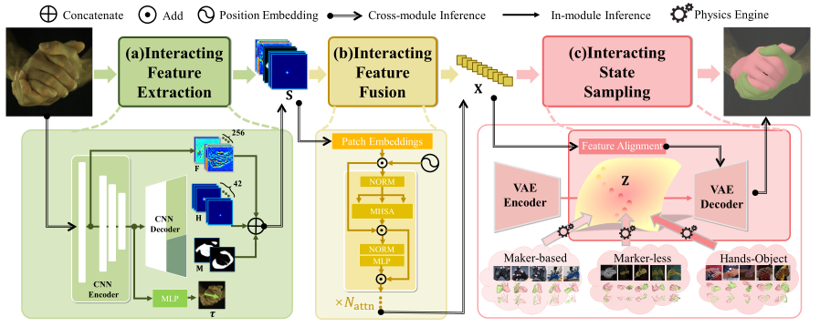
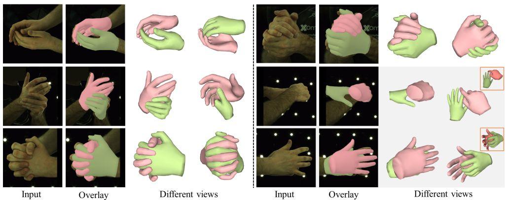
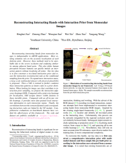

IEEE/CVF International Conference on Computer Vision (ICCV), 2023
Reconstructing Interacting Hands with Interaction Prior from Monocular Images

Overview of architecture.
The total pipeline consists of three stages. (a) We first design an expressive feature extraction module to extract global and local context information. Besides that, the proposed IAH adaptively maps adjacent joints with Laplacian distribution and provides more visual attention. (b) A ViT-based fusion module is designed to fuse the extracted features, which are regarded as sampling conditions to reconstruct the final result. (c) We build a powerful interaction prior with multimodal datasets and use the physics engine to make the ground truth more physically plausible Abstract
Reconstructing interacting hands from monocular images is indispensable in AR/VR applications. Most existing solutions rely on the accurate localization of each skeleton joint. However, these methods tend to be unreliable due to the severe occlusion and confusing similarity among adjacent hand parts. This also defies human perception because humans can quickly imitate an interaction pattern without localizing all joints. Our key idea is to first construct a two-hand interaction prior and recast the interaction reconstruction task as the conditional sampling from the prior. To expand more interaction states, a large-scale multimodal dataset with physical plausibility is proposed. Then a VAE is trained to further condense these interaction patterns as latent codes in a prior distribution. When looking for image cues that contribute to interaction prior sampling, we propose the interaction adjacency heatmap (IAH). Compared with a joint-wise heatmap for localization, IAH assigns denser visible features to those invisible joints. Compared with an all-in-one visible heatmap, it provides more fine-grained local interaction information in each interaction region. Finally, the correlations between the extracted features and corresponding interaction codes are linked by the ViT module. Comprehensive evaluations on benchmark datasets have verified the effectiveness of this framework.
Results

More reconstruction results on Interhand2.6M dataset.
Materials
|

Related links
|
|
Reference
Binghui Zuo, Zimeng Zhao, Wenqian Sun, Wei Xie, Zhou Xue and Yangang Wang. "Reconstructing Interacting Hands with Interaction Prior from Monocular Images". IEEE/CVF International Conference on Computer Vision (ICCV), 2023.
Acknowledgments: This work was supported in part by the National Natural Science Foundation of China (No. 62076061), in part by the Natural Science Foundation of Jiangsu Province (No. BK20220127).